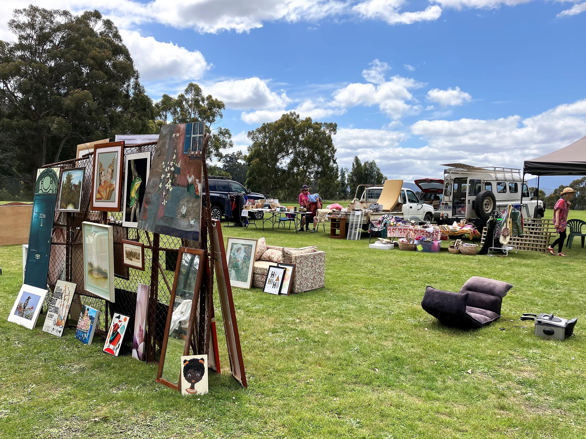

Annual Garage / Car Boot Sale
The Rec Club has held an annual spring Garage Sale since 2019. The first one was held in September, but for the last 4 years, they have been held in November on the first weekend of the national Garage Sale Trail.
Each Garage Sale has been a significant fundraiser for the Club, as well as performing the community service of helping people de-clutter and encouraging recycling. Unsold usable items are donated to charity shops and the Council tip shop.
The next Garage Sale will be on Saturday 9th November 2024. People with items they don’t need can either donate them to the Club to sell, hire a stall inside the club, or hire a large car boot site on the green. There is always an unbelievable array of items for sale. Yes, we often do have the kitchen sink! There will also be a sausage sizzle and a coffee van.
Linking with the Garage Sale Trail means maximum advertising for the event and for the last few years we have had 15 - 20 stall holders visited by several hundred potential buyers. To book a stall or to donate items, please contact Maggy on 0411 232 777.
